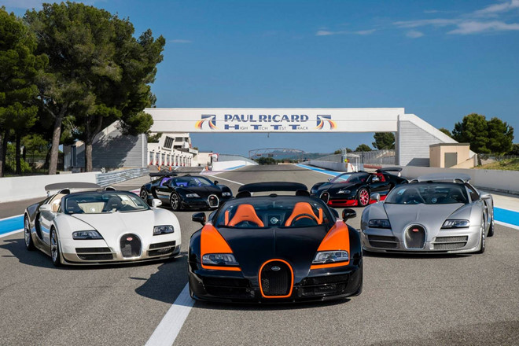
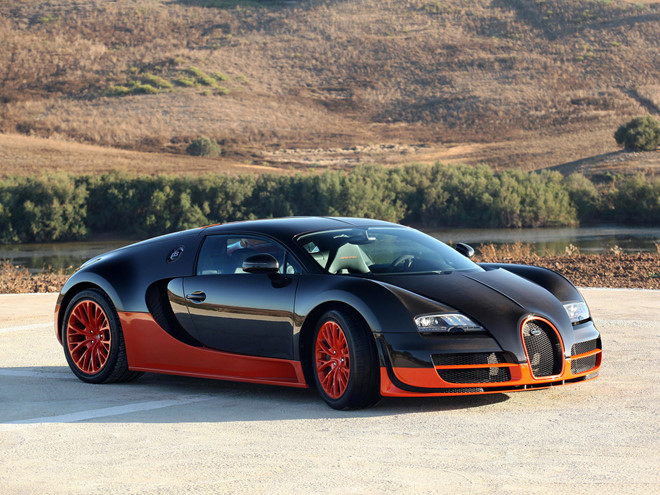
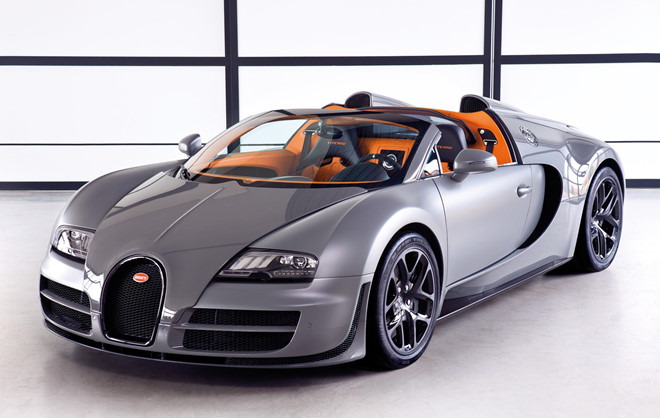
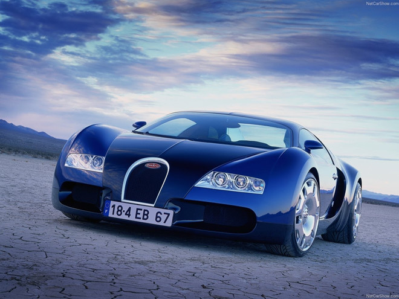
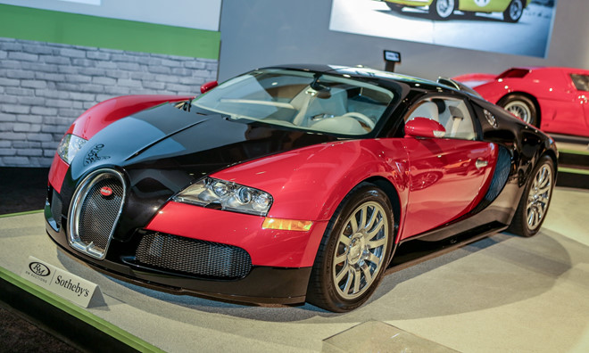
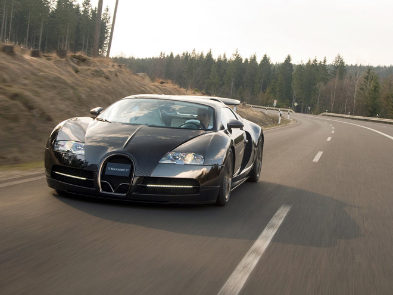

5 siêu xe Bugatti đắt nhất thế giới
Được thành lập bởi Ettore Bugatti từ 1909, Bugatti là thương hiệu xe sang mang tính biểu tượng của Pháp. Năm 1947, sau cái chết của Ettore Bugatti, thương hiệu này dần đi vào ngõ cụt. Cho đến khi dừng sản xuất, chỉ có 8.000 chiếc Bugatti được sản xuất. Năm 2008, tập đoàn Volkswagen của Đức đã mua lại thương hiệu này và làm sống dậy tên tuổi Bugatti. Giờ đây, Bugatti gắn liền với những mẫu xe nhanh nhất thế giới. Chủ sở hữu của nó đều thuộc giới siêu giàu.

1. Bugatti Veyron 16.4 Super Sport - 4 triệu USD
Bugatti Veyron 16.4 Super Sport là siêu xe kết hợp hài hòa giữa hiệu suất và vẻ đẹp. Sức mạnh được cung cấp bởi khối động cơ 8 lít, W16, công suất 1.200 mã lực. Siêu xe này có thể đạt tốc độ tối đa 431 km/h. Thời gian tăng tốc từ 0-100 km/h chỉ 2,2 giây.

2. Bugatti Veyron Grand Sport Vitesse - 3 triệu USD
Veyron Grand Sport Vitesse là phiên bản đặc biệt của dòng Grand Sport bởi nó mang trong mình khối động cơ trên Super Sport. Siêu xe này cũng có sức mạnh 1.200 mã lực và là chiếc xe mui trần nhanh nhất thế giới. Tốc độ tối đa giảm xuống 410 km/h để đảm bảo an toàn, thời gian tăng tốc từ 0-100 km/h trong 2,6 giây.

3. Bugatti EB 18.4 Veyron Concept - 3 triệu USD
Giới thiệu lần đầu năm 1999 tại Tokyo Motor Show, Veyron Concept là phiên bản thử nghiệm của “ông hoàng tốc độ” Veyron. Mãi 6 năm sau, vào 2005, phiên bản sản xuất của Veyron mới được ra mắt. Ban đầu, chiếc xe này được đặt tên là Pierre Veyron. Theo tính toán của các kỹ sư hãng xe Pháp, Veyron Concept có thể đạt tốc độ tối đa 340 km/h nhờ khối động cơ W18, 6.2 lít, công suất 555 mã lực. Thời gian tăng tốc từ 0-100 km/h trong 4,2 giây.

4. Bugatti Veyron 16.4 đầu tiên - 2,55 triệu USD
Siêu xe thể thao này được giới thiệu năm 2005 và tiếp tục sản xuất đến hết năm 2011. Khối động cơ W16, công suất tối đa 1.001 mã lực giúp xe tăng tốc từ 0-100 km/h trong 2,46 giây. Nó có thể đạt tốc độ tối đa 407 km/h.

5. Bugatti Veyron Mansory Linea Vincero - 2,2 triệu USD
Với chiếc xe mạnh mẽ này, bạn có thể phóng từ 0-100 km/h trong 2,5 giây. Khối động cơ tương tự trên Veyron nhưng được độ bởi Mansory, cho công suất 1.109 mã lực, tốc độ tối đa 407 km/h.
